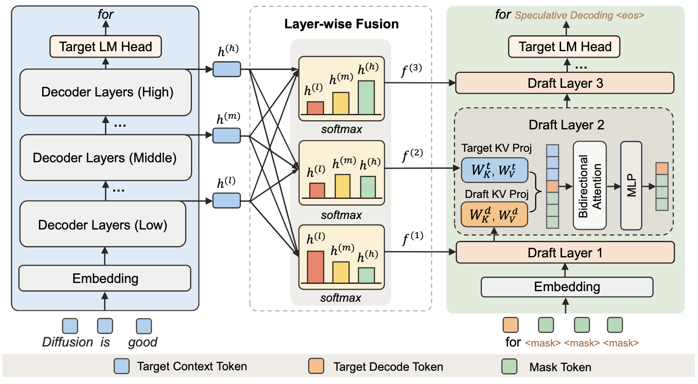
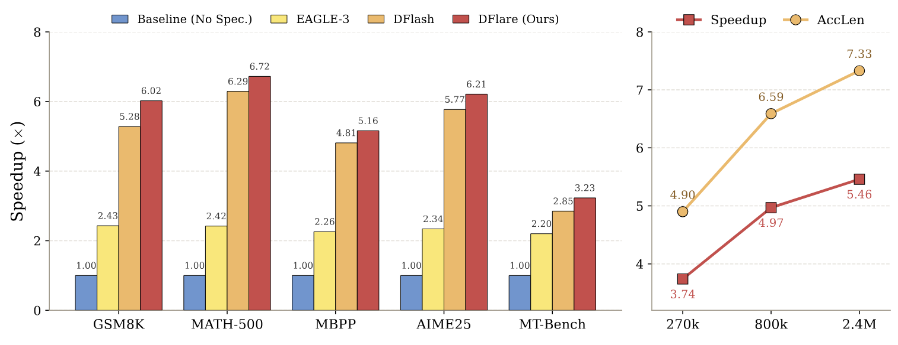

DFlare#
DFlare is a block-diffusion speculative decoding framework that accelerates large language model inference by predicting an entire block of tokens in one shot for the target model to verify in parallel. It removes the narrow conditioning bottleneck of the prior state-of-the-art DFlash through a lightweight layer-wise fusion mechanism: each draft layer attends to its own learnable combination of a broad set of target layers at negligible overhead, simultaneously injecting richer target knowledge and giving every draft layer a distinct input. Combined with training-data scaling, this enhanced per-layer expressiveness allows the draft model to scale to deeper architectures with consistent gains, achieving up to 5.52× end-to-end speedup without compromising output quality.
This repository contains the official implementation and resources for the paper: DFLARE: Scaling Up Draft Capacity for Block Diffusion Speculative Decoding.

🚀 Abstract#
Block diffusion speculative decoding accelerates LLM inference by predicting all tokens within a block simultaneously for the target model to verify in parallel. Predicting an entire block at once requires a sufficiently capable draft model and effective utilization of the target model’s internal knowledge. However, the state-of-the-art method DFlash constrains all draft layers to share a single fused representation derived from only a few target layers, limiting per-layer expressiveness and hindering further scaling of draft capacity. We present DFLARE, which flares out the narrow conditioning bottleneck of DFlash through a lightweight layer-wise fusion mechanism: each draft layer attends to its own learnable combination of a broad set of target layers at negligible overhead, simultaneously injecting richer target knowledge and providing every draft layer with a distinct input. This enhanced per-layer expressiveness enables scaling the draft model to deeper architectures with consistent gains. We further scale training data from 800K to 2.4M samples to fully exploit the enlarged capacity. On six benchmarks spanning mathematical reasoning, code generation, and conversation, DFLARE attains average wall-clock speedups of 5.52× on Qwen3-4B, 5.46× on Qwen3-8B, and 3.91× on GPT-OSS-20B, improving over DFlash by roughly 11%, 8%, and 5% respectively.
✨ Key Highlights#
Layer-wise Fusion for Richer Conditioning: Replaces DFlash’s single fused representation with a lightweight mechanism in which each draft layer attends to its own learnable combination of a broad set of target layers, removing the conditioning bottleneck at negligible overhead.
Scalable Draft Capacity: The enriched per-layer expressiveness lets the draft model scale to deeper architectures with consistent gains, complemented by scaling training data from 800K to 2.4M samples to fully exploit the enlarged capacity.
Substantial End-to-End Speedups: Across six benchmarks covering mathematical reasoning, code generation, and conversation, DFlare delivers average wall-clock speedups of 5.52× on Qwen3-4B, 5.46× on Qwen3-8B, and 3.91× on GPT-OSS-20B — roughly 11%, 8%, and 5% over DFlash respectively.
⚡ Quick Start#
Training#
DFlare reuses the DFlash training pipeline and selects the layer-wise fusion architecture via --draft_arch dflare. Two entry points are provided:
Online training (recommended) — runs the target model on the fly to produce hidden states each step. No data pre-generation step needed.
export TARGET_MODEL_PATH=/path/to/Qwen3-4B
export TRAIN_DATA_PATH=/path/to/train.jsonl
export OUTPUT_DIR=/path/to/output
bash scripts/speculative/run_dflare_online.sh 8 flex_attention
Offline training — trains from pre-computed hidden-state .ckpt files. First generate the cache with scripts/speculative/generate_dflash_data.sh using a DFlare-compatible draft config, then:
export TARGET_MODEL_PATH=/path/to/Qwen3-4B
export TRAIN_HIDDEN_PATH=/path/to/hidden_cache
export OUTPUT_DIR=/path/to/output
bash scripts/speculative/run_dflare_offline.sh 8 flex_attention
Both entries use the same defaults: block_size=16, num_anchors=512, lr=6e-4, cosine schedule with 4% warmup, max_length=3072, FSDP shard_grad_op with FP32 master-weights optimizer, and flash_attention_2 for the target model. The default draft model config is configs/qwen3_dflare.json.
Inference and Evaluation#
To benchmark a trained DFlare draft model on tasks such as GSM8K, MT-Bench, MATH-500, and HumanEval, use tools/dflash_benchmark.py. The script supports both DFlash and DFlare draft architectures via the --draft-arch flag — for DFlare set --draft-arch dflare. It loads the matching QwenDFlareDraftModel class, runs block-parallel speculative decoding (block-size proposal from the draft + parallel target verification + longest-prefix accept), and reports decoding speedup, average acceptance length, and the per-block acceptance-length histogram.
Single-GPU evaluation:
python tools/dflash_benchmark.py \
--model-name-or-path /path/to/Qwen3-4B \
--draft-name-or-path /path/to/dflare_checkpoint \
--draft-arch dflare \
--dataset gsm8k \
--max-samples 128 \
--max-new-tokens 2048 \
--temperature 0.0 \
--block-size 16
Multi-GPU evaluation (workload is sharded across ranks; results are gathered to rank 0):
torchrun --nproc_per_node=8 --master_port=29600 \
tools/dflash_benchmark.py \
--model-name-or-path /path/to/Qwen3-4B \
--draft-name-or-path /path/to/dflare_checkpoint \
--draft-arch dflare \
--dataset gsm8k \
--max-samples 128 \
--max-new-tokens 2048 \
--temperature 0.0 \
--block-size 16
Notes:
--block-sizeis optional; if omitted, the script readsblock_sizedirectly from the loaded draft checkpoint’s config.The script runs each prompt twice — once with
block_size=1(vanilla AR decoding) and once with the speculativeblock_size— so the reportedDecoding speedupis a self-contained ratio. No external baseline run is required.Both target and draft are loaded in
bfloat16withflash_attention_2whenflash-attnis installed (otherwise it falls back to PyTorch SDPA, which reduces wall-clock speedup but does not affect acceptance length).Supported datasets out of the box:
gsm8k,math500,aime24,aime25,alpaca,mt-bench,humaneval,mbpp,lbpp,swe-bench,livecodebench.To compare DFlash and DFlare on the same checkpoint format, switch
--draft-arch dflashand point--draft-name-or-pathto a DFlash checkpoint — the rest of the command stays identical.
📈 Results#
We evaluate DFlare on six benchmarks spanning mathematical reasoning (GSM8K, MATH-500, AIME), code generation (HumanEval, MBPP, LiveCodeBench), and open-domain conversation (MT-Bench, Alpaca), against DFlash and EAGLE-3 baselines on Qwen3-4B, Qwen3-8B, and GPT-OSS-20B target models.

📜 Citation#
If you find our work useful in your research, please consider citing our paper:
@article{DFlare2026,
title={DFlare: Scaling Up Draft Capacity for Block Diffusion Speculative Decoding},
author={Jiebin Zhang and Zhenghan Yu and Song Liu and Eugene J. Yu and Zheng Li and Dawei Zhu and Jiangshan Duo and Weimin Xiong and Yifan Song and Guanghua Yu and Jianchen Zhu and Sujian Li},
journal={arXiv preprint arXiv},
year={2026}
}